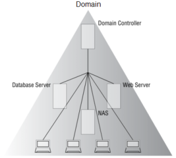
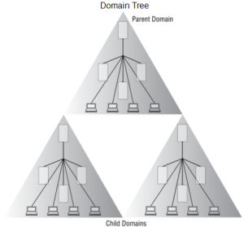
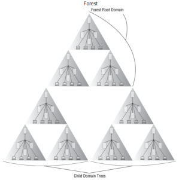

Windows Authentication attacks
Windows Authentication →
Passwords and Authentication → Windows
Domains, Trees, and Forests
Organizational Units(OUs): An organizational unit (OU) also called Container, is a subdivision within an Active Directory into which you can place users, groups, computers, and other organizational units. You can create organizational units to mirror your organization's functional or business structure
Domain Controller: ◇ DC has the information about everything in the company
◇ DC provide authentication and authorization
◇ DC managers all the policies of the entire network of devices.
Domain: Windows hosts when used in enterprise environments are usually arranged in a type of network called domain
◇ An Administrative Boundary for applying policies to groups of objects
◇ A replication boundary for replicating data between domain controllers
◇ An authentication an authorization boundary that provides a way to limit the scope of access to the resources
Domain Tree: Multiple domains that share a common namespace form a Domain Tree
example: DANIELE.HOME.INTERNAL and GIOVANNI.HOME.INTERNAL
Forest: A forest is a collection of one or more domain trees
◇ Share a common schema
◇ Share a common configuration partition
◇ Share a common global catalog to enable searching
◇ Enable trusts between all domains in the forest
◇ Share the enterprise Admins and Schema Admins groups
Bibliography:• “Hands on Hacking: Become an Expert at Next Gen Penetration Testing and Purple Teaming” Matthew Hickey, Jennifer Arcuri